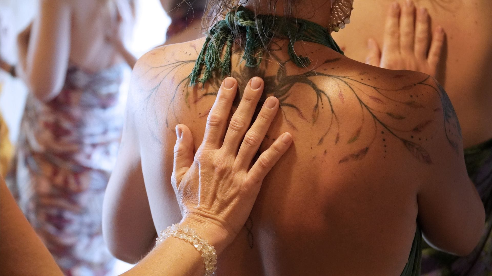
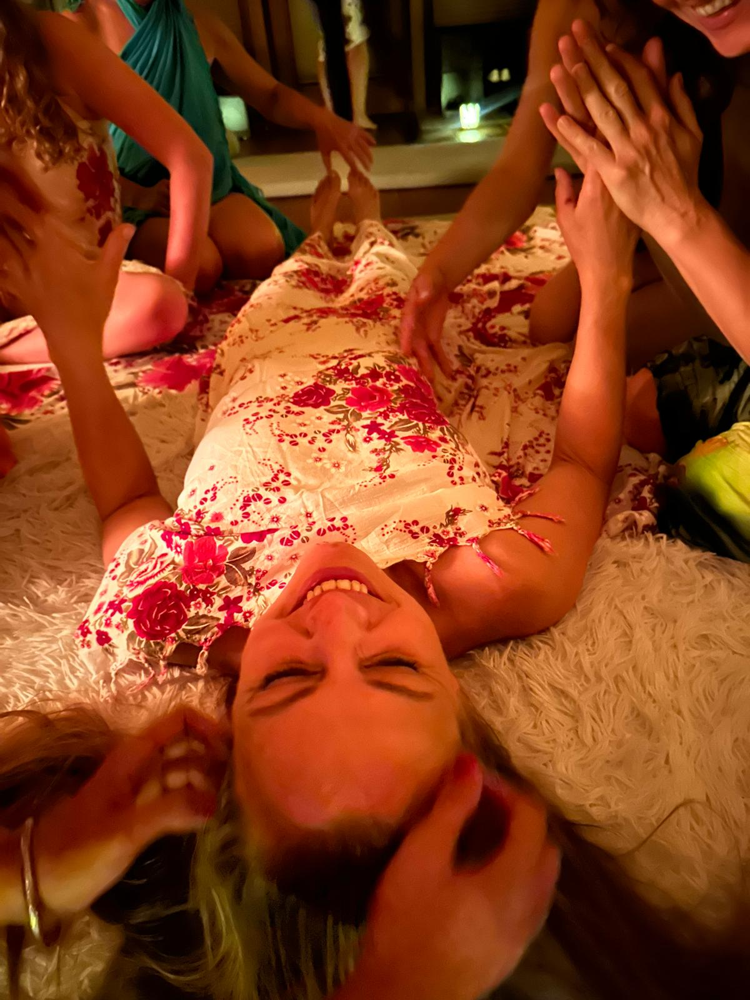
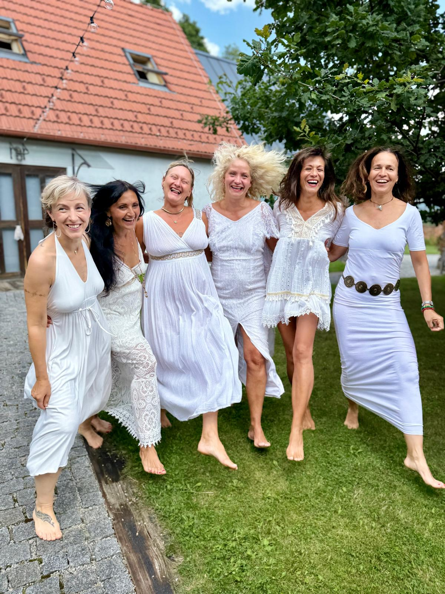

Zažij chrám ženské krásy
Chrám krásy Shakti je dobrovolným letním speciálem Mysterijní školy ženství. Je otevřený ženám, které uvažují o vstupu do školy a chtějí poznat její jedinečnou atmosféru, i ženám, které již prošly její cestou a přejí si znovu prožít společný čas plný krásy, tvořivosti, praxe a ženské vzájemnosti.
Setkání je příležitostí znovu se propojit, upevnit získané zkušenosti a společně prohloubit praxi vědomého života.
Po čtyři dny společně vytvoříme prostor plný elegance, něhy, radosti, inspirace a vzájemné výživy. Chrám ženské krásy, kde se každá žena může zastavit, vydechnout, spočinout sama v sobě a znovu objevit svou přirozenou záři.




Čtyři dny vědomé praxe a ženské vzájemnosti
Dotkneme se archetypální podstaty ženského principu, který přirozeně probouzí magnetismus, vnitřní klid, emocionální rovnováhu, zdraví, hojnost a naplnění ve vztazích i v seberealizaci.
Každé ráno zahájíme spirituální integrální jógou, vědomým dechem a praxemi sublimace životní a sexuální energie, které podporují vitalitu, tvořivost, harmonii a hlubší propojení s vlastní božskou ženskou podstatou.
Čeká nás umění tantrického doteku, vědomého pohybu, smyslnosti a vzájemné péče. Prostřednictvím meditace, kontemplace, tance, hravosti a sesterského sdílení budeme otevírat posvátnost ženského těla jako chrámu života.


Krása jako modlitba. Ženství jako umění. Život jako posvátné tvoření.


Krása, která rozkvétá zevnitř

Vnitřní krása
Skutečná krása rozkvétá ve chvíli, kdy žena spočine sama v sobě. Když naslouchá svému tělu, otevře své srdce a dovolí své přirozenosti svobodně zářit. Právě tehdy se její ženská esence stává tím nejkrásnějším, co může světu nabídnout.

Energie Shakti
Každá žena v sobě nese živou energii Shakti. Energii tvořivosti, intuice, lásky a životní síly. Skrze vědomý pohyb, dech, meditaci a tanec jí společně vytvoříme prostor, aby se mohla znovu probudit a přirozeně proudit.

Síla ženské vzájemnosti
Když se ženy setkají v prostoru důvěry, vzniká něco jedinečného. Sdílení, podpora, inspirace i společné tvoření vytvářejí živý chrám ženské energie, ve kterém může každá žena rozkvétat svou vlastní cestou.
Prožitky, které nikde jinde nezažiješ
Letní speciál přináší jedinečné chrámové prožitky, které nejsou součástí modulů Mysterijní školy ženství. Každý z nich vznikl jako pozvání k hlubšímu propojení s krásou, tvořivostí a ženskou podstatou.

Chrámový tanec Bohyně
Posvátný tanec inspirovaný dávnými Mysterijními školami, ve kterém se pohyb stává modlitbou lásky, harmonie a vděčnosti.
Tantrický rituál pro ženy
Exkluzivní ženský rituál vědomého tantrického doteku, který přináší hluboké uvolnění, regeneraci a návrat do těla.
Floristické umění
Tvoření krásy prostřednictvím květin, harmonie linií a posvátné geometrie jako odrazu řádu, který prostupuje celým životem.
Hlas jako cesta k sobě
Hlasová dílna se živou hudbou a vzácnou hostkou, která otevře prostor pro svobodný hlasový projev a radost z vlastního vyjádření.
A to je jen část toho, co společně během čtyř dnů prožijeme. Těšit se můžeš také na:
- Meditace, kontemplace a praxe přítomnosti.
- Channeling jóni, dělohy a srdce.
- Havajská meditace Ho'oponopono.
- Léčivá zvuková lázeň křišťálových mís a gongu.
- Relaxace v přírodě, koupání a čas pro sebe.
- Napojení na energii Velkého a Malého Blaníku.
- Oslava ženskosti, tvořivosti a božské podstaty ženy.
Centrum Buchov
Celý program probíhá uprostřed přírody, v malebném a energií naplněném prostředí centra Buchov. Prostor podporuje hluboké zklidnění, otevření ženského vnímání i propojení s přírodními rytmy.
Centrum se nachází v romantické středočeské krajině na dohled od bájné hory Blaník. Okolní louky, lesy a hluboký klid přírody přirozeně podporují ztišení a jemné otevření se samé sobě.
Po celé setkání nás bude provázet lahodná vegetariánská a veganská kuchyně připravovaná s láskou jako součást chrámové péče o tělo, srdce i duši.

Léto je časem rozkvětu, radosti a návratu k tomu, co vyživuje naši duši. Pokud cítíš, že tě toto prožitkové setkání volá, srdečně tě zvu do letního chrámového prostoru Mysterijní školy ženství.
21. 7. – 25. 7. 2028 • Centrum Buchov